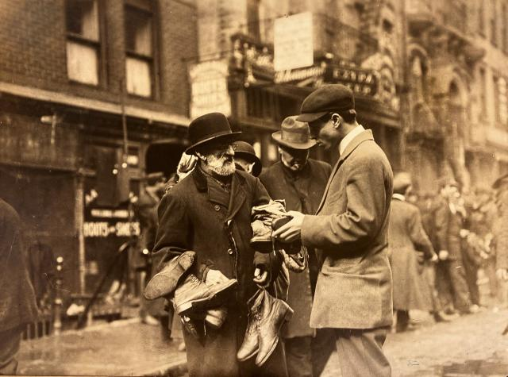
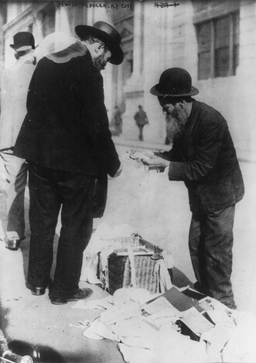
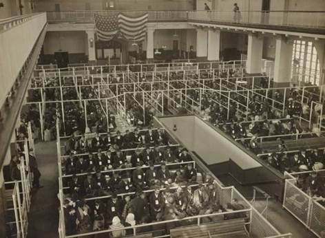
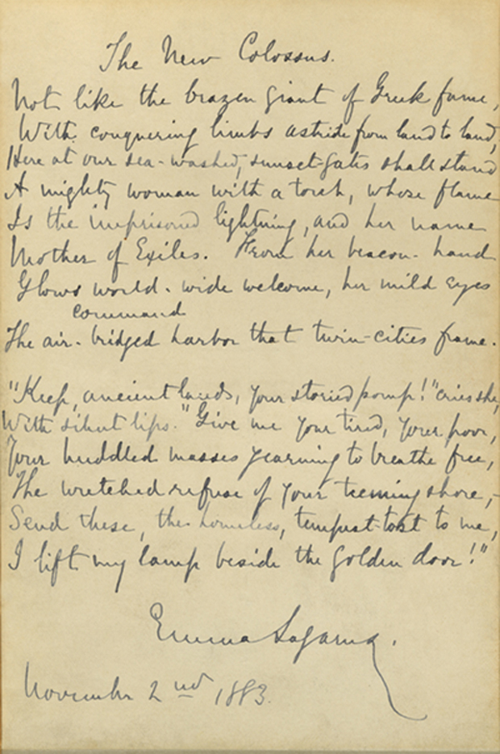
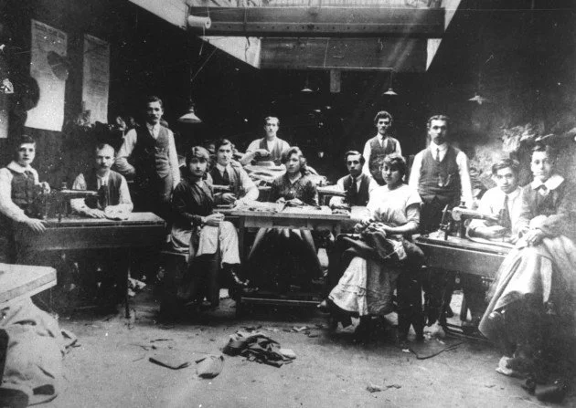
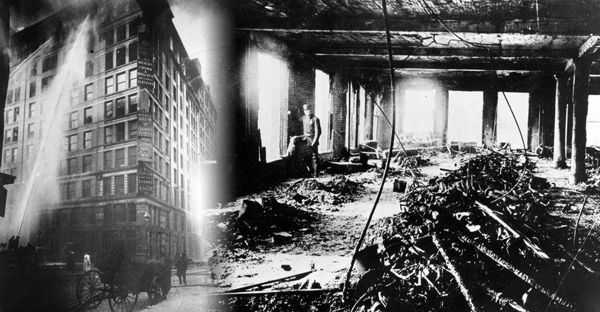
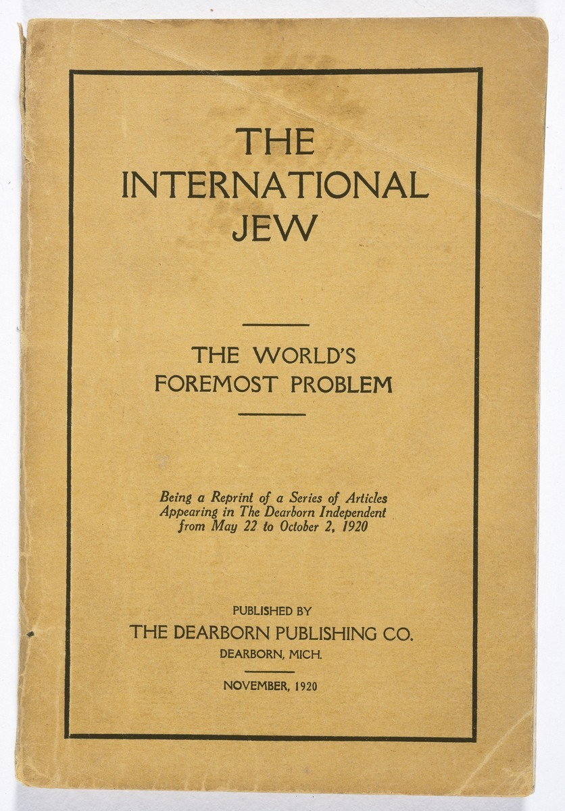
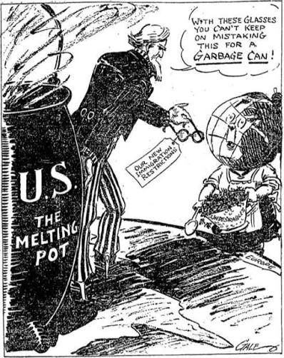
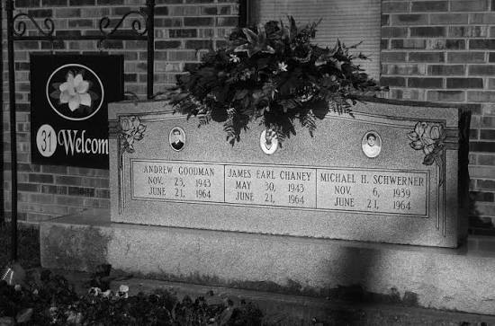
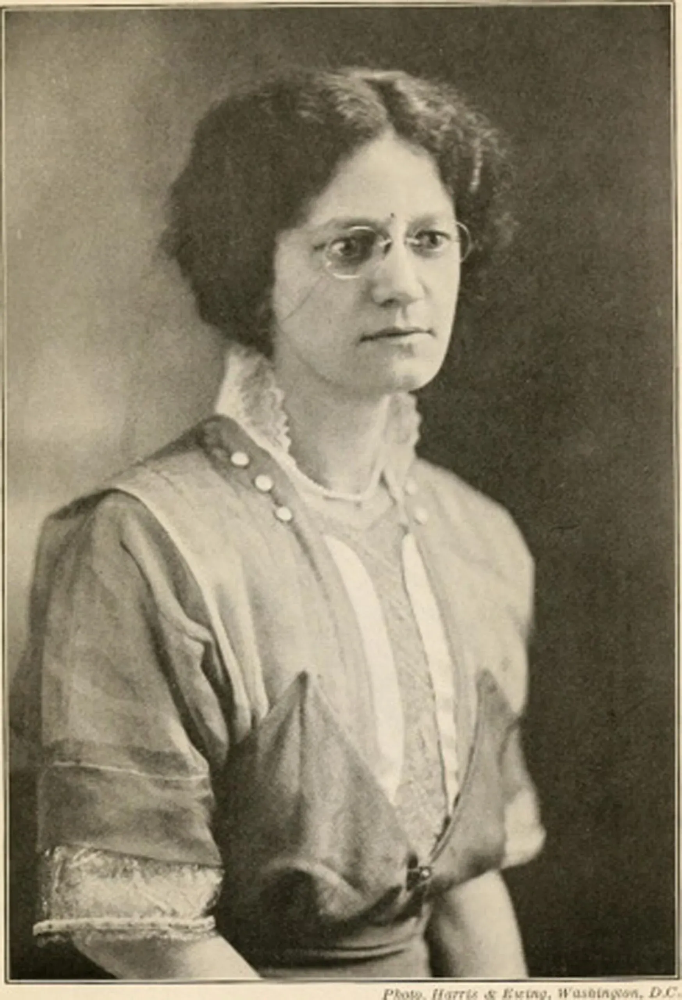

How did Jewish immigrants build American identity while facing exclusion, and what does their experience tell us about who gets to be considered American?
INTRODUCTION
A STREET FULL OF LANGUAGES
On a crowded morning in Manhattan’s Lower East Side around 1905, a child could step outside and hear pushcart wheels, shopkeepers calling out prices, and neighbors speaking YiddishA language historically spoken by many Eastern European Jewish communities. in the street. Families squeezed into small rooms above stores and workshops. Some adults worked in garment shops for long hours, while children carried bundles, translated English, and learned how to move between home and America. This lesson begins there: in a neighborhood where Jewish immigrants tried to become American without losing themselves.
Around 1905, the Lower East Side in New York City was full of noise, people, and many languages. A child might hear Yiddish in the street and English at school. Families lived in small rooms above shops and factories. Many adults worked very long days making clothing. This lesson starts in that neighborhood because Jewish immigrants were trying to build new lives and still hold on to who they were.

Lower East Side street scene, early 1900s. Library of Congress, From Haven to Home exhibit search suggested.HISTORICAL CONTEXT
THREE WAVES, ONE QUESTION
Jewish life in what became the United States did not begin with one single group. The first Jewish communities were often Sephardic JewsJews with roots in Spain, Portugal, North Africa, and the Mediterranean world., including descendants of Jews expelled from Spain in 1492. They built small communities in places such as Newport, Savannah, and Charleston during the colonial period. A second wave came from German-speaking Europe between 1820 and 1880, especially during political unrest around 1848. Many became merchants, professionals, and community leaders while shaping Reform JudaismA Jewish movement that adapted religious practice to modern life. in American settings.
Jewish American history did not start with only one group. Some of the first Jewish communities were Sephardic Jews. Many had family roots in Spain and Portugal. Later, German Jews came between 1820 and 1880. Many opened businesses, entered professions, and helped shape Jewish religious life in America.
Touro Synagogue in Newport, Rhode Island, connected to early Sephardic Jewish life in colonial America. Wikimedia Commons.

German Jewish immigrants often built businesses and community institutions in American cities and towns. Library of Congress search suggested.
The largest wave arrived between 1880 and 1924, when about 2.5 million Eastern European Jews came to the United States. Many fled pogromsOrganized attacks against Jewish communities, often with government approval or indifference. in the Russian Empire, where violence and legal restrictions made life unsafe. They arrived through ports such as Ellis Island and joined crowded neighborhoods like the Lower East Side. They brought religious traditions, family networks, newspapers, unions, theater, food, and political arguments with them. America changed them, but they also changed America.
The largest group came between 1880 and 1924. About 2.5 million Eastern European Jews came to the United States. Many were escaping pogroms, which were organized attacks on Jewish communities. They arrived through places like Ellis Island and moved into crowded neighborhoods. They brought their language, religion, family life, food, newspapers, unions, and ideas with them. They changed as they became American, but America also changed because of them.

Immigrants arriving through Ellis Island, late 1800s or early 1900s. Library of Congress search suggested.
DID YOU KNOW

Emma Lazarus manuscript of The New Colossus, 1883. Library of Congress / Wikimedia Commons.
One of the most famous American poems about welcoming immigrants was written by Emma Lazarus, a Jewish American poet. Her words were added to the Statue of Liberty years after the statue was built, which means the statue’s immigrant meaning was something Americans created over time.
RESISTANCE AND AGENCY
WORKERS WHO WOULD NOT STAY SILENT
Many Eastern European Jewish immigrants found work in the garment industry. In sweatshopsWorkplaces where people labor long hours for low pay in unsafe conditions., workers sewed clothing for fourteen-hour days and earned very little money. Families often depended on several people working, including teenagers. At home, many lived in tenementsCrowded apartment buildings where many immigrant families lived in small rooms. where five or six people could share one room. Hard work helped families survive, but it also pushed workers to organize for dignity.
Many Eastern European Jewish immigrants worked making clothing. Sweatshops were crowded, unsafe workplaces with long hours and low pay. Some people worked fourteen hours a day. Families often needed adults and teenagers to work. Many lived in tenements, where several people shared one room. These conditions were hard, but they also helped push workers to organize.

Immigrant garment workers in a crowded workshop, early 1900s. Library of Congress search suggested.
Jewish workers helped build the American labor movementOrganized efforts by workers to win better pay, hours, safety, and rights.. The International Ladies’ Garment Workers’ Union, often called the ILGWU, became one of the most important unions in the garment industry. Workers organized strikes, held meetings, printed newspapers, and demanded safer factories. They did not simply wait for America to accept them; they used American rights to reshape the country. Their organizing connected immigrant survival to public laws about wages, hours, and workplace safety.
Jewish workers helped build the American labor movement. The International Ladies’ Garment Workers’ Union became an important union for garment workers. Workers went on strike, held meetings, printed newspapers, and demanded safer factories. They did not just wait to be accepted. They used rights like speech and organizing to change American workplaces.
FAST FACTS
Jewish Immigration, Work, and Risk in Numbers
2.5MEastern European Jews came to the United States between 1880 and 1924, making this the largest Jewish immigration wave.
14hours could make up a garment worker’s day in some sweatshops, showing why labor organizing mattered.
146workers died in the Triangle Shirtwaist Factory fire, many of them young Jewish and Italian immigrant women.
1924the year a strict immigration quota law sharply limited arrivals from Eastern and Southern Europe.
The Triangle ShirtwaistA New York garment factory where a 1911 fire killed 146 workers. Factory fire made the danger impossible to ignore. On March 25, 1911, a fire broke out in a New York factory where many workers were young Jewish and Italian immigrant women. Some exit doors were locked, and fire ladders could not reach the upper floors. The disaster killed 146 workers and shocked the city. Afterward, labor activists and reformers pushed for stronger fire codes, factory inspections, and workplace safety laws.
The Triangle Shirtwaist Factory fire showed how dangerous factory work could be. On March 25, 1911, a fire started in a New York garment factory. Many workers were young Jewish and Italian immigrant women. Some doors were locked, and ladders could not reach the workers. 146 people died. After the fire, reformers pushed for stronger safety rules.

Triangle Shirtwaist Factory fire, March 25, 1911. Wikimedia Commons / Library of Congress search suggested.PRESENT REALITY
BELONGING WITH CONDITIONS
Jewish Americans built communities, businesses, unions, schools, newspapers, theaters, and political organizations. At the same time, they faced anti-SemitismHatred, discrimination, or conspiracy beliefs directed at Jewish people. in many parts of American life. Some neighborhoods used deed rules to block home sales to Jews. Some country clubs, hotels, and universities limited Jewish membership or enrollment. In the 1920s, the Ku Klux Klan attacked Jews, Catholics, Black Americans, and immigrants as threats to its idea of America.
Jewish Americans built many parts of American life. They created communities, businesses, unions, newspapers, theaters, and schools. But they also faced anti-Semitism. Some neighborhoods blocked Jews from buying homes. Some clubs, hotels, and colleges limited Jewish people. The Ku Klux Klan also targeted Jews, Catholics, Black Americans, and immigrants.

Henry Ford’s Dearborn Independent spread antisemitic conspiracy claims in the 1920s. Wikimedia Commons.
Exclusion also shaped immigration policy. The immigration quotaA legal limit on how many immigrants can enter from certain countries. system of the 1920s sharply reduced immigration from Eastern and Southern Europe. That mattered deeply when the HolocaustThe Nazi genocide that murdered six million Jews and millions of others. began in Europe. The United States kept restrictive immigration laws even as Jews tried to escape Nazi persecution. For many Jewish Americans, belonging in the United States carried a painful question: would America protect people only after they were already accepted as fully American?
Immigration laws also excluded Jewish immigrants. In the 1920s, quota laws limited immigration from Eastern and Southern Europe. This became especially important during the Holocaust. The Holocaust was the Nazi genocide that murdered six million Jews and millions of others. Many Jews tried to escape Europe, but the United States kept strict immigration limits. This made many Jewish Americans ask who America was willing to protect.

Immigration restriction became federal policy in the 1920s. Library of Congress search suggested.
Jewish Americans also joined movements for justice beyond their own community. Jewish lawyers, donors, rabbis, students, and organizers supported parts of the civil rights movement. Some rode Freedom Buses, helped fund legal cases, and worked with Black civil rights organizations. In 1964, Andrew Goodman and Michael Schwerner, two Jewish civil rights workers, were murdered in Mississippi along with James Chaney, a Black civil rights worker. Their story does not mean Jewish and Black experiences were the same, but it shows how people who faced exclusion could build alliances for a larger idea of American democracy.
Jewish Americans also helped other movements for justice. Some Jewish lawyers, donors, rabbis, students, and organizers supported the civil rights movement. Some joined Freedom Rides and helped with voting rights work. In 1964, Andrew Goodman and Michael Schwerner, who were Jewish, were murdered in Mississippi with James Chaney, who was Black. Their experiences were not the same, but they worked together for a stronger democracy.

James Chaney, Andrew Goodman, and Michael Schwerner became symbols of Freedom Summer and interracial civil rights work. Wikimedia Commons search suggested.
ART SPOTLIGHTThe Tailor Becomes a Storekeeper: Federal Theatre Project Yiddish Unit, 1930s. This WPA theater poster advertised a Yiddish-language play and shows how Jewish immigrant culture became part of American public arts during the New Deal era.
The poster is not just theater advertising. It shows a sewing machine, a symbol of garment work, inside a public arts program funded by the federal government. A language once heard mainly in immigrant streets and homes was being printed on an official American poster.
Jewish American identity has never been only one thing. It has included religion, culture, language, race, immigration, labor, memory, and politics; different Jewish Americans have experienced those parts differently.
PRIMARY SOURCE MOMENT
AN IMMIGRANT CLAIMS AMERICA

Mary Antin, Jewish immigrant writer and author of The Promised Land. Wikimedia Commons search suggested.
PRIMARY SOURCE
“Naturalization, with us Russian Jews, may mean more than the adoption of the immigrant by America. It may mean the adoption of America by the immigrant. On the other hand, it is not easy to become an American. You have to be born again.”
Mary Antin, The Promised Land, 1912
Mary Antin was a Jewish immigrant from the Russian Empire who became a writer in the United States. Her words show that becoming American could feel hopeful and difficult at the same time.
IN SIMPLE TERMS: Antin says immigrants did not only enter America; they also chose America and changed themselves in the process.
THEN AND NOW
BELONGING IS NOT GIVEN ONCE; IT IS BUILT, TESTED, AND DEFENDED.
1910S
Jewish immigrant children often learned English and American civic ideas at school while speaking Yiddish or other languages at home.
NOW
Jewish Americans today continue to build community, teach history, practice culture, and respond to hate through public life and solidarity.
THEN
Jewish immigrants in the early 1900s often lived between worlds. Children learned English and American customs in school, while families kept traditions, religion, food, and languages like Yiddish alive at home. Their American identity was not automatic; they built it while facing poverty, suspicion, and pressure to assimilate.
NOW
Jewish Americans today live with many different identities and experiences. Some are treated as white in many social settings, while also facing anti-Semitism as a targeted religious and cultural minority. Many respond through education, worship, activism, public memory, art, and alliances with other communities.
CONNECTION
The Jewish American experience shows that American identity has always been argued over. Jewish immigrants helped build American labor, culture, law, civil rights, and public life, even when institutions tried to limit their belonging. Their history asks whether America is defined by exclusion or by the people who keep expanding who counts.
When a community is asked to prove it belongs, what does that reveal about the meaning of being American?